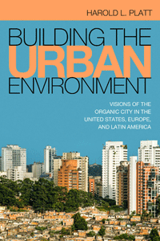

<body bgcolor="#FFFFFF" text="#000000" link="#0000FF" vlink="#CC0000" alink="#CC0000"><center><hr width="350" size="1" align="center" noshade>An international comparative study that considers how competing agents of change have interacted to build the urban environment<hr width="350" size="1" align="center" noshade><p><a href="https://cdcshoppingcart.uchicago.edu/Cart/ChicagoBook.aspx?ISBN=9781439912362&&PRESS=temple" target="_top">Buy this book!</a> | <a href="https://cdcshoppingcart.uchicago.edu/Cart/Cart.aspx?PRESS=temple" target="_top">View Cart</a> | <a href="https://cdcshoppingcart.uchicago.edu/Cart/Cart.aspx?PRESS=temple" target="_top">Check Out</a></p><p></p></center><!--none//--><h1>Building the Urban Environment</h1>
<H2>Visions of the Organic City in the United States, Europe, and Latin America</H2>
<h3>Harold L. Platt</h3>
<P>cloth 1-4399-1236-X $89.50, Sep 15, <FONT COLOR=#990033>Available</FONT>
<br>paper 1-4399-1237-8 $29.95, Sep 15, <FONT COLOR=#990033>Available</FONT>
<br>Electronic Book 1-4399-1238-6 $29.95 <FONT COLOR=#990033>Available</FONT>
<BR> 302 pp
6 x 9
15&nbsp;map(s)
</P><BLOCKQUOTE><I>"</i>Building the Urban Environment<i> is entirely original in its overall conceptualization, synthesis of the literature, and its major arguments. Platt demonstrates how post–WWII planning was conducted within a historical context that valorized specific ideas and visions of the city often at the expense of the people who lived in the city. His analytical framework of the organic city is original and significant. It challenges the reader to reconsider the rationales/rationality of modernism as well as the values upon which so much of the received wisdom of the post–WWII planning of cities was predicated."</i><br>&#151<b>Maureen A. Flanagan</b>, Illinois Institute of Technology</I></BLOCKQUOTE>
<P><I>Building the Urban Environment</I> is a comparative study of the contestation among planners, policymakers, and the grassroots over the production and meaning of urban space. Award-winning historian Harold Platt presents case studies of seven cities, including Rotterdam, Chicago, and Sao Paulo, to show how, over time, urban life created hybrid spaces that transformed people, culture, and their environments.
<P>As Platt explains, during the post-1945 race to technological modernization, policymakers gave urban planners of the International Style extraordinary influence to build their utopian vision of a self-sustaining “organic city.” However, in the 1960s, they faced a revolt of the grassroots. <I>Building the Urban Environment</I> traces the rise and fall of the Modernist planners during an era of Cold War, urban crisis, unnatural disasters, and global restructuring in the wake of the oil-energy embargo of the ’70s.
<P>Ultimately, Platt provides a way to measure different visions of the postwar city against actual results in terms of the built environment, contrasting how each city created a unique urban space.
<BR>&nbsp;<h2>Excerpt</h2><P>Excerpt available at <a href="http://www.temple.edu/tempress">www.temple.edu/tempress</a></p>
<BR>&nbsp;<h2>Reviews</h2>
<p><i>"</i>Building the Urban Environment<i> offers many fresh and powerful insights. Platt makes a convincing case that planners were as much a part of the problem as the solution to many urban ills. His synthesis, within the metaphor of the organic city, is highly effective. It frames the entire discussion in a unique way, and provides a cogent means to incorporate nature into the discussion of the city, and to highlight many of the wrong-headed ideas of modernist urban planning. </i>Building the Urban Environment<i> provides a powerful and penetrating critique that touches not only on environmental issues, but race, labor, housing, and municipal administration at both the local and national levels. Through his effective exploration of multi-continent case studies, Platt enriches the argument for the adoption, the failure, and rejection of the organic city."</i> <br>&#151<b>Craig E. Colten</b>, Louisiana State University
<p><i>"Historian Harold Platt seeks to chart the 20th century history of planning in </i>Building the Urban Environment<i>.... The book sparkles with concepts and turns of phrase.... [It] will definitely provoke comparisons and stimulate thought."</i><br>&#151<b><i>Planning</i> magazine</b>
<p><i>"Platt offers an engaging, fascinating comparative case study that examines how cities were built during the postwar era in the US, Europe, and Latin America.... Summing Up: Highly recommended."</i>
<br>&#151<b><i>Choice</i></b>
<BR>&nbsp;<H2>About the Author(s)</H2>
<P><b>Harold L. Platt</b> is Professor of History Emeritus at Loyola University Chicago. He is the author or editor of several volumes, including <I>Shock Cities: The Environmental Transformation and Reform of Manchester and Chicago</I>, which won the Abel Wolman Award.</P>
<BR><H2>Subject Categories</H2>
<p><A HREF="/tempress/urban.html" TARGET="_top">Urban Studies</a>
<BR><A HREF="/tempress/history.html" TARGET="_top">History</a>
<BR><A HREF="/tempress/social.html" TARGET="_top">Community Organizing and Social Movements</a>
</p>
<BR><h2 class="inpageheading">In the series</H2>
<P><I><a href="http://www.temple.edu/tempress/urban_life.html" onMouseOver="window.status='Click for other books in this series!'; return true;" onMouseOut="window.status=''; return true;" target="_top">Urban Life, Landscape, and Policy</a></i>, edited by Zane L. Miller, David Stradling, and Larry Bennett.
</p><p><i>Urban Life, Landscape, and Policy Series</i>, edited by Zane L. Miller, David Stradling, and Larry Bennett, features books that examine past and contemporary cities, focusing on cultural and social issues. The editors seek proposals that analyze processes of urban change relevant to the future of cities and their metropolitan regions, and that examine urban and regional planning, environmental issues, and urban policy studies, thus contributing to ongoing debates.</p>
<p align="center"><a href="https://cdcshoppingcart.uchicago.edu/Cart/ChicagoBook.aspx?ISBN=9781439912362&&PRESS=temple" target="_top">Buy this book!</a> | <a href="https://cdcshoppingcart.uchicago.edu/Cart/Cart.aspx?PRESS=temple" target="_top">View Cart</a> | <a href="https://cdcshoppingcart.uchicago.edu/Cart/Cart.aspx?PRESS=temple" target="_top">Check Out</a></p><p><font face="Arial" size="1"><a href="copyright.html" onMouseOver="window.status='Web Copyright Policy';return true;" onMouseOut="window.status=''" title="Web Copyright Policy">&copy;</a> 2016 <a href="http://www.temple.edu" target="new" onMouseOver="window.status='Link to Temple University home page';return true;" onMouseOut="window.status=''" title="Link to Temple University home page">Temple University</a>. All Rights Reserved. http://www.temple.edu/tempress/titles/2357_reg.html</font></p>